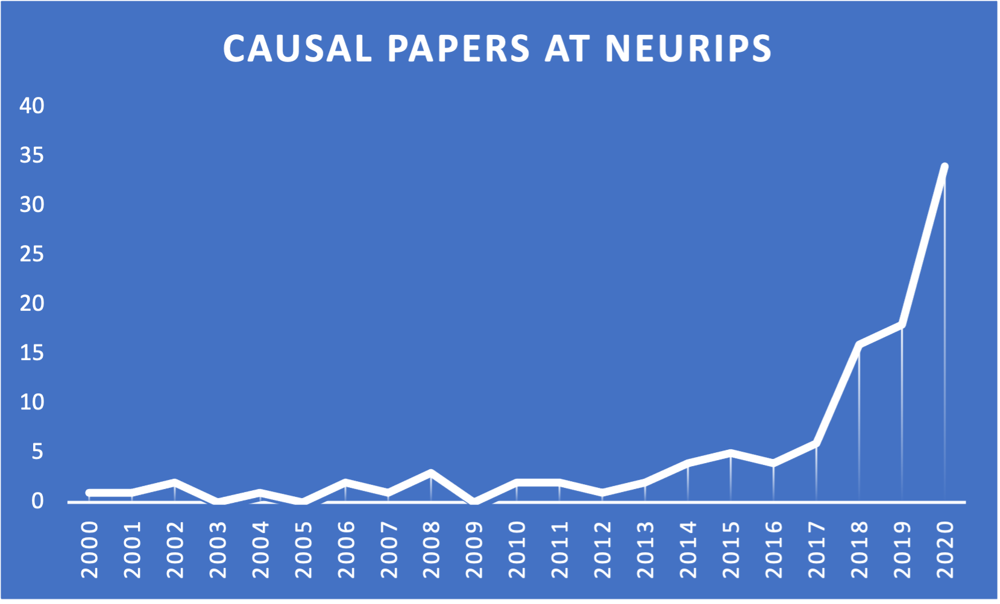
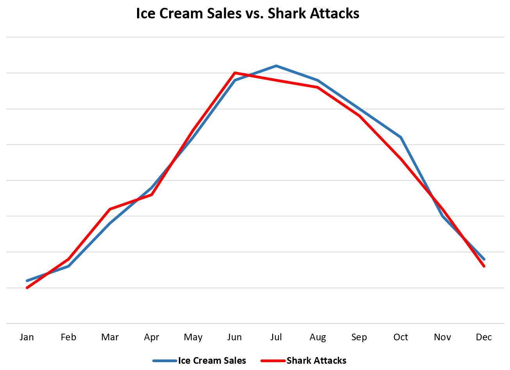
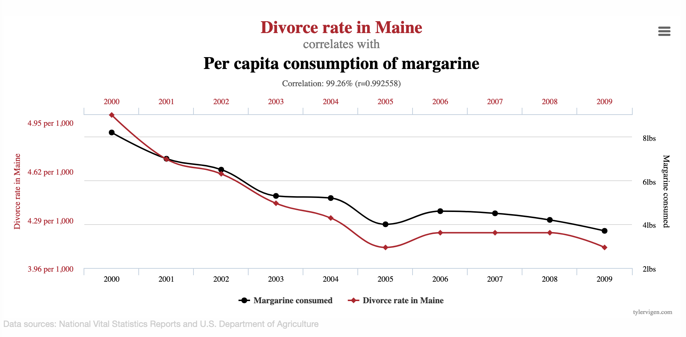
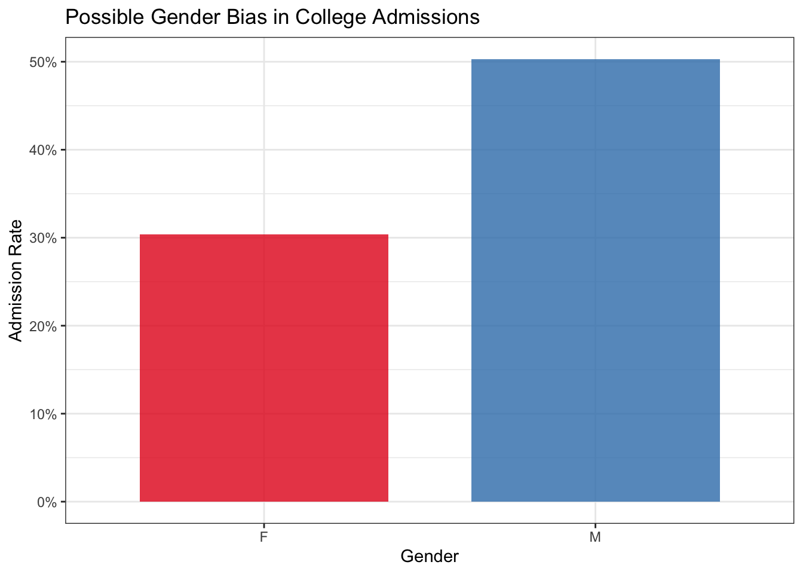
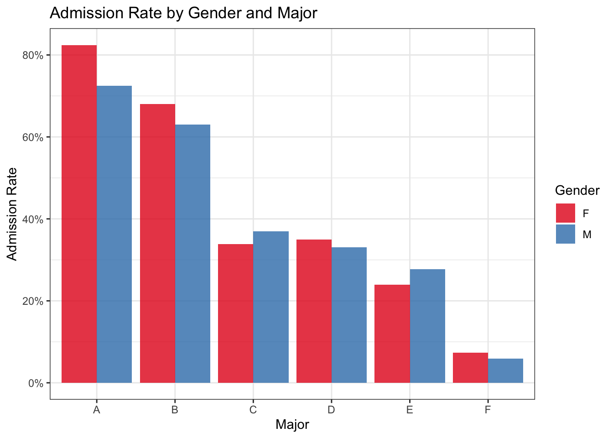
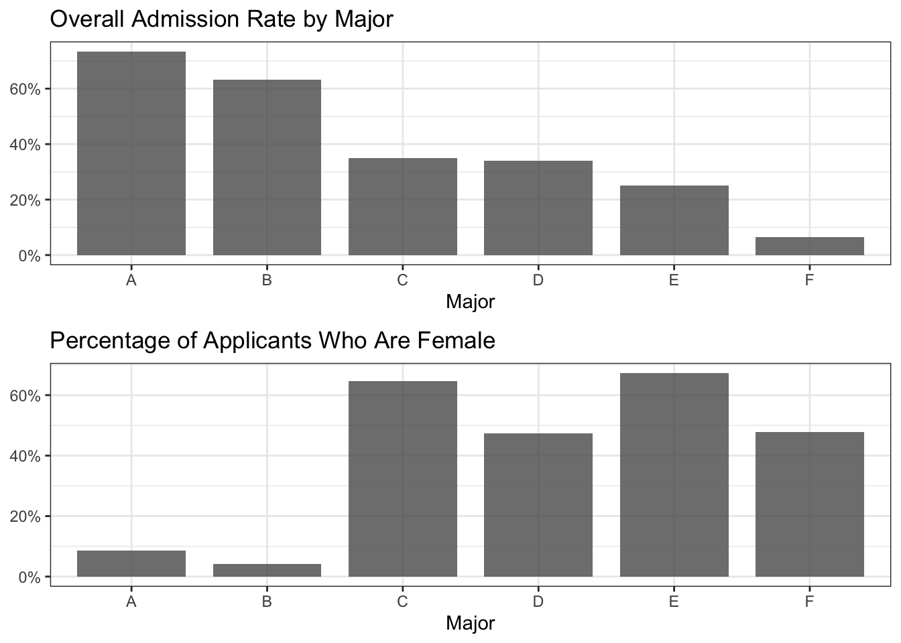

1 Introduction to Causality
Greetings, and welcome to the first chapter of the Causal Machine Learning book! If you’re here, it’s likely that you are a data or machine learning professional who wants to incorporate causality into your toolkit. Alternatively, you might be skeptical about the usefulness of causal inference methods in applied settings. In either case, you’re in the right place!
In this chapter, we will introduce some high-level concepts about causality and give some motivating examples to set the stage before our dive into causal inference. Specifically, we will answer the question “why should I use causality?,” provide a (brief) historical overview of causality, give a few current examples of causal inference applications in industry settings, and describe the mentality shift compared to a typical ML workflow. After that, the next few chapters will give you everything you need to get up and running in applied causal inference.
Background Knowledge
We assume that readers are familiar with standard statistical methods including correlation and logistic regression. Readers without this prior knowledge are encouraged to consult a resource such as Chapters 3 and 4 of Introduction to Statistical Learning1 (James et al. 2013).
1.1 Why Should I Use Causality?
The amount of available data has increased dramatically over the last 20 years, and with it, there has been an exponential increase in the questions one might try to answer using data. Many of these questions are fundamentally causal in nature:
- Why did metric \(X\) change this month?
- Which of our customers should we target with \(Y\) campaign?
- What would happen if we instituted \(Z\) policy change?
Questions like these are commonplace in modern companies, and they all have something in common: they want to understand and quantify causal relationships using data. With large amounts of data and computing power available, it becomes easy to attempt to answer these questions using basic correlational analysis. Standard methods can sufficiently answer the question of what happened, but when the question becomes why or how something occurred, correlation can mislead. Indeed, there are a couple of issues that arise in these settings which can be difficult to overcome without the right set of tools at your disposal. These challenges involve the ability to interpret associations within data as something meaningful, as well as a phenomenon where observed effects appear to reverse. We will see that causal inference provides an attractive solution to both of these problems.
Judging by trends in machine learning research, it becomes clear that interest in causal methods is growing beyond traditional settings in applied statistics as well. Figure 1.1 shows the increase in causal papers that appear at the popular ML research journal NeurIPS2.
Clearly there is growing momentum surrounding causal methods. In the following sections, we will dig deeper into the specific problems that causality can help address.
1.1.1 Challenge #1: Correlation Does Not Imply Causation
The phrase “correlation does not imply causation” has become somewhat of a cliché; it is a common response to any measured association, and it is often used in response to various analyses in public policy, medicine, economics, and any other scientific or quantitative field. However trite it may be, there is a degree of truth contained within this statement: we cannot just accept associations within data (however strong they may appear to be) as a meaningful relationship.
One commonly used example of this is the strong correlation between ice cream sales and shark attacks. Figure 1.2 illustrates what this relationship might look like.3 Judging by the data alone, one might conclude that eating ice cream causes shark attacks – a horrifying prospect for vacationers with a sweet tooth.

Other associations between variables may not actually be grounded in any common causes or similarities in the data whatsoever. The name for such relationships is spurious correlations, and they can arise anywhere.
Tip
Spurious correlation describes an association between two variables that do not actually share a meaningful relationship.
For example, consider Figure 1.3, which illustrates the surprising relationship between the per-capita consumption of margarine in the US and the divorce rate in Maine4. There appears to be a very tight association between these annual time series, with a correlation coefficient of greater than 99%! Of course, no one actually believes that the amount of artificial butter produced has any impact on divorces, but blindly trusting the data could easily lead someone astray.

These examples are somewhat extreme for the purpose of illustrating concepts, but similar challenges analysts encounter in the “real world” will undoubtedly be more nuanced and harder to identify. With the vast amounts of data and computing power available to companies, it is easy to see that these databases are ripe for mining correlations – even those that are entirely spurious in nature. Keen analysts will partner with subject matter experts to learn more about their domain, giving them more of an ability to discern whether a particular association makes sense. However, domain-specific insight does not remove the risk of mistaking a spurious correlation for something more, and confirmation bias is always lurking for even the most seasoned industry veteran or academic researcher.
1.1.2 Challenge #2: Simpson’s Paradox
The other major challenge that arises in the context of data analysis is a phenomenon known as Simpson’s Paradox, which describes a reversal in an apparent relationship between variables when controlling for another variable (Sprenger and Weinberger 2021).
Tip
Simpson’s Paradox occurs when a relationship between two variables disappears or reverses when taking another factor into account.
To illustrate this, we’ll use the standard dataset investigating gender bias in admissions at UC Berkeley in 19735. Figure 1.4 shows the high-level admission rate for male and female applicants, where there appears to be a significant bias against female students.

As we can see, the overall admission rate of male applicants is much higher than for female applicants: a difference of roughly 30% versus 50%! This appears very concerning, however, things become less clear when looking at admission rate within each major separately. Figure 1.5 shows the male and female admission rates for each major. Surprisingly, the trend actually reverses for most of the majors in the dataset.

But how can this be? If female admission rates are equal or higher within most departments, shouldn’t the overall female admission rate also be higher? This is a perfect example of Simpson’s Paradox, and it has to do with unequal distribution of applicants between departments. Figure 1.6 shows one aspect contributing to this phenomenon: the departments with the highest acceptance rates are overwhelmingly male-dominated.

In fact, if we fit a logistic regression model predicting admission from the major and the applicant’s gender, the coefficient for gender is quite near to zero and actually slightly favors female applicants: note the coefficient for GenderM in the following model output, denoting the impact of being male on admission odds.
Call:
glm(formula = admission_int ~ Gender + Major, data = admissions)
Coefficients:
Estimate Std. Error t value Pr(>|t|)
(Intercept) 0.739957 0.018508 39.980 < 2e-16 ***
GenderM -0.007018 0.015084 -0.465 0.642
MajorB -0.100760 0.021877 -4.606 4.21e-06 ***
MajorC -0.387799 0.020768 -18.673 < 2e-16 ***
MajorD -0.396616 0.020668 -19.190 < 2e-16 ***
MajorE -0.485950 0.023599 -20.592 < 2e-16 ***
MajorF -0.670465 0.021310 -31.462 < 2e-16 ***
---
Signif. codes: 0 '***' 0.001 '**' 0.01 '*' 0.05 '.' 0.1 ' ' 1
(Dispersion parameter for gaussian family taken to be 0.1903506)
Null deviance: 1184.22 on 4838 degrees of freedom
Residual deviance: 919.77 on 4832 degrees of freedom
AIC: 5714.1
Number of Fisher Scoring iterations: 2Ultimately, whether any gender bias is actually present in this dataset is not exactly clear, and other questions arise: are female students applying to more competitive departments, or are the male-dominated majors receiving significantly more funding than the others? We cannot know from this dataset, but it does illustrate the behavior of Simpson’s Paradox.
Simpson’s Paradox can appear in virtually any context, presenting much more nuanced problems which are more difficult to identify and manage than in the admissions example. When these reversals of trends occur “in the wild,” it may not be obvious which variables should be included in an analysis. Given the large amount of data available for analysis, there may be a temptation to throw every available factor into a model (or even just the “usual suspects” from easily accessible databases) and accept whatever it returns. It can be tricky to understand what information is actually useful in answering a particular question, and traditional methods provide little guidance for how to proceed. When a particular coefficient is going to be used as the basis for an important decision, Simpson’s Paradox can make it difficult to know which result to trust.
1.1.3 Causality to the Rescue
Causal inference provides a solution to both of these problems. We will dive deeper into the specific details in the next chapter, but we will now give a high-level introduction into how causal methods address these issues.
Causal inference is the name given to a formal process which allows us to measure causal effects from data: even messy observational data! This is made possible by a careful scientific approach which involves outlining assumptions and performing tests to determine whether such an estimate is possible in a given setting. Under the right conditions, this approach allows us to extend our findings from correlational to causal.
One foundational concept of causal inference is the need to define causal relationships that exist between variables: for example, by saying that \(A\) causes \(B\), we are explicitly assuming that \(B\) does not cause \(A\). We can enumerate all of the relevant relationships for a specific context, which in turn outlines all of the assumptions that are made about the environment. The process of defining these relationships within a directed acyclic graph (DAG) also provides a benefit of being able to know when variables are independent of each other. We will go into greater detail on d-separation and causal graph construction later, but what’s important for now is that this practice of defining causal relationships provides a strong defense against Simpson’s Paradox – we will only control for a particular variable when necessary, and we will do so in the manner specified by our assumptions and the causal question we are asking.
This practice also helps us avoid issues from spurious correlations: any relationship between two conditionally independent variables in a causal graph is assumed to be spurious, and will not affect the causal estimation.
1.2 A Shift in Perspective
One of the biggest changes when going from a standard analytical workflow to that of causal inference is the difference in mentality. For example, a typical machine learning task will focus on training a model whose predictions perform the best for a particular task, while statistical modeling uses tests of significance and goodness-of-fit to evaluate hypotheses. Causality is different, thanks to a framework which somewhat lines up with the scientific process. To summarize, the causal inference process requires us to:
- Formalize a question (e.g. What if \(X\) happened? Why did \(Y\) occur?)
- Enumerate assumptions about the environment and how variables relate to one another
- Collect relevant data
- Determine whether causal estimation is possible (meaning that the underlying assumptions hold and the causal quantities can be computed from the available data)
- Estimate the quantities of interest
In fact, actually producing the causal estimand (i.e. the quantified treatment effect) is a relatively small part of the causal inference process, and the math involved is often quite simple: in many cases, it’s no more complex than logistic regression or calculating the expected values of a distribution. Much more of the effort is spent in the experimental design phase: ensuring you have properly framed the question, consulting with domain experts to validate the causal graph, and determining whether your desired result is actually identifiable from the data you have (and if not, identifying what new sources of data you would need to proceed).
This process culminates in a causal estimate which is based on the assumptions enumerated in the design phase and the data collected. If the causal model is an accurate reflection of the environment, the estimand can be interpreted as a causal effect. If it is not, more work is needed to make the assumptions match reality. This falsifiability – via objections to the causal graph – is a crucial feature of the causal inference process, as it allows for iterative refinement of the assumptions until it is possible to interpret the effects as something more than simple correlation. This is the beauty (and challenge) of causal inference!
1.3 Causal Inference: A Brief History
Before we dive into the details of causal inference methods, it might be helpful to have some historical context to understand how these techniques developed. In this final section of the first chapter, we will give a brief overview of causality: starting from the early days and finishing with examples of how modern companies are using causal inference in applied settings.
1.3.1 Beginnings
While related work can be traced back to the early 20th century, Donald Rubin’s 1974 entry in the Journal of Educational Psychology entitled “Estimating Causal Effects of Treatments in Randomized and Non-Randomized Studies” introduced what would eventually be known as the potential outcome framework. In Rubin’s words, “The basic conclusion is that randomization should be employed whenever possible but that the use of carefully controlled nonrandomized data to estimate causal effects is a reasonable and necessary procedure in many cases” (Rubin 1974). Rubin encourages practitioners working with observational data to think carefully about the other variables (aside from the treatment) that may impact the target of an analysis. As we saw earlier in this chapter, the choices we make about whether to control for a factor can significantly impact our results. Rubin’s work represents a major step forward in the ability to interpret estimates from observational data as something more than simple correlation.
Starting in the late 1980s, Judea Pearl produced a large body of work solidifying causal inference as a scientific practice, culminating in his 2000 textbook Causality (Pearl 2000). Pearl’s early work focused on the use of directed acyclic graphs (DAGs) to represent causal structure, and he built upon this to develop a robust, thorough language and framework for conducting causal inference. Specifically, Pearl introduced do-calculus, the language of interventional adjustments conducted on observational data – do-calculus was a groundbreaking development because it provides a set of formal definitions for how to perform adjustments in a way to achieve causal understanding.
Another significant contribution in (Pearl 2000) is the ranking of causal inference problems into tiers, which later became known as the Ladder of Causation (also called the Pearl Causal Hierarchy). The Ladder of Causation places causal queries into the following “rungs:”
- Prediction: how does knowledge of one variable change our expectation of another variable? For example, how does admission rate differ by gender?
- Intervention: how does our target respond if we force the treatment to take a certain value? For example, if we randomly assigned male and female students to apply to each major, how does the admission disparity change?
- Counterfactual: why did a particular outcome occur, and would it have been different under different circumstances? For example, would a particular female student have been accepted had she been male and applied to the same major?
Following the ladder illustration, as we go from one rung to the next we are asking increasingly causal questions. The first rung represents what is typically done with descriptive statistics or standard statistical modeling: for example, conditional expectations fall on the the first rung on the ladder of causation. These are methods that describe what actually happened within the natural world from which the data originated.
The second rung on the ladder of causation involves action on the part of the investigator. The questions on this rung are interventional in nature, meaning that a particular variable is fixed (either manually as in the case of a randomized controlled trial, or through an adjustment based on do-calculus). These questions seek to understand what if: for example, if I were to take a particular medication, would it make me feel better? Many of the objectives of predictive modeling are inherently asking similar questions: what if the predictors change in a certain way, based on the patterns identified in the training data?
The counterfactual questions on the third rung represent the groundbreaking notion of querying why something occurred or what would have happened in a so-called “dream world” made possible by the causal modeling process. Counterfactual reasoning opens a door to questions that are impossible to answer using only “second rung” tooling. These methods allow us to understand what caused particular outcomes, generate treatment effects at the individual level, and explore other hypothetical scenarios within our causal environment.
Pearl, his students, and his contemporaries have continued developing new methods within causal inference, and this work is beginning to grow in application throughout academic research and in industry.
The chapters that follow will introduce these techniques in greater detail and provide examples of how to use them. We will provide the relevant theory necessary to use and understand these methods, but readers who are interested in going deeper into the theory of causality are encouraged to explore Pearl’s work, including Causality.
1.3.2 Initial Adoption and Applications
Two areas of early application of causal inference came within the fields of economics and epidemiology. Each field shares the common goal of understanding the effects of policy changes, individual behavior, and other external factors; and each field had standard quantitative methods in place long before the formalization of causality as a scientific practice.
Prior to Pearl’s work, economists had been using structural equation models (SEMs) to describe cause-and-effect relationships between variables since the 1950s (Reiss and Wolak 2007). These SEMs are similar in nature to the structural causal models (SCMs) introduced by Pearl; however, in Causality, Pearl contends that the language of SEMs does not allow for the distinction between causal questions and statistical questions (Pearl 2000). Pearl’s work on SCMs extends the structural model using the language of causal inference, the benefits of graphical modeling, and the ability to operate within nonlinear settings. In the years after Causality, econometricians began adopting causal inference methods within various contexts including policy evaluation (Heckman 2008).
Similarly, the field of epidemiology had its own methods of quantifying causal effects. These “classic” methods made important contributions to the quantitative discovery of disease causes, including providing evidence that smoking causes lung cancer. However, a crucial drawback of these methods include their lack of a “formal basis for evaluating causal hypotheses” (Glass et al. 2013). Pearl’s methods provide this as a primary feature through the ladder of causation and do-calculus.
Naturally, debate still exists within both of these fields regarding whether causal inference via Pearl’s methods should be adopted more widely. However, the potential outcomes framework is continuing to find applications within these domains.
1.3.3 Recent Applications in Industry
In recent years, causal inference has found several applications in industry. In this section, we will provide some examples of how modern companies are using causal methods in real-world settings. Don’t worry if some of these terms are unfamiliar to you — we will provide definitions and examples of the underlying methods in the next few chapters. The goal of this section is to get you excited by showing how these techniques are having an impact in applied settings!
Personalized marketing is a common tactic used in industry: companies want to target their advertising efforts on the customers who are most likely to respond. One approach to this targeting problem is a method called uplift modeling, which uses counterfactuals to identify the potential effect of an action in order to target the individuals with the most opportunity. Scientists at Uber developed a Python library called CausalML to package the common processes involved in uplift modeling (Chen et al. 2020). We’ll talk more about uplift modeling in Chapter 3.
One company currently using causal inference in a significant way is Netflix: the video streaming giant has published various blog posts and whitepapers (such as (Wong 2020)) detailing their adoption and development of applied causal inference methods. One such blog post6 outlines some of the specific uses of causal inference throughout their organization, from gaining understanding about how users respond to different features to developing a general framework for causal ranking within recommender systems.
Many published applications of causal inference in industry are focused within testing and experimentation: many technology companies run lots of tests to determine the effectiveness of new features, the appeal of new designs, or the impact of changes in processes. Running large-scale A/B tests can be expensive, and in some cases, it may not be feasible to directly test some of the “treatments” that need to be examined. On top of this, A/B tests are inefficient, and it can take a very long time to collect enough data to have trustworthy results. In the blog post, researchers at Netflix describe how they use causal inference in various ways to augment and improve their A/B testing regimes, including the use of double machine learning to match similar observations and extract incremental differences in outcomes.
1.4 Books and Resources
Before closing out the first chapter, we want to leave you with a list of helpful resources: namely books, courses, conferences, and codebases which pertain to causal inference. We use some of these resources and tools throughout the book; others will be helpful for readers with varying degrees of interest in specific applications or focuses in causality.
Books
No single resource will contain everything about causality – in this book, we make the choice to omit some theoretical detail in favor of practical application. In order to provide guidance to readers embarking on the journey of causal inference, we have compiled a list of other books and online courses that we believe would be beneficial. The list includes resources that cover causality at various levels of depth and complexity, providing readers with the opportunity to explore the topic in a manner that aligns with their needs and experience level.
| Name | Description |
|---|---|
| Causal Inference in Statistics: A Primer | The book is highly recommended as a primary source of introductory knowledge on the subject for a wide range of individuals. |
| Elements of Causal Inference: Foundations and Learning Algorithms | The book is an excellent resource for readers who have a background in machine learning and understand the connection between causal inference and machine learning. It offers in-depth coverage of various topics, including causal discovery, structural learning, and structural causal models. |
| Data Analysis Using Regression and Multilevel/Hierarchical Models | The book features two important chapters devoted to the subject of causal inference and its connection to the widely-used machine learning technique of regression analysis. The chapters provide an introductory treatment of the subject and approach it in a practical, hands-on manner that is highly effective for practitioners. |
| Fundamentals of Causal Inference (With R) | This textbook is a good resource for researchers and students who seek to gain an understanding of the principles and techniques involved in causal inference with R background. The book is organized such that each chapter includes an R implementation of the introduced causal concepts and models, as well as accompanying datasets. Also, each chapter provides exercises designed to reinforce the understanding of the subject matter. |
| Observation and Experiment: An Introduction to Causal Inference | The author of this text employs a practical and accessible approach, requiring minimal mathematical and statistical knowledge, to elucidate crucial concepts and techniques. Drawing on examples from a diverse range of fields, including clinical medicine, economics, public health, epidemiology, clinical psychology, and psychiatry, the author’s use of concrete examples and relatable case studies allows for a better understanding of complex ideas and abstract principles. Specifically, the book provides readers with a clear understanding of how to design and interpret randomized trials, as well as the distinctions between observational studies and randomized trials. The text also covers techniques for identifying, investigating, and evaluating bias in observational studies. |
| Causality: Models, Reasoning, and Inference | The book begins by covering fundamental concepts such as probabilities, graphs, and causal models before delving extensively into advanced causal techniques, including structural equation modeling. Subsequently, complex applications of these techniques in social sciences and economics are discussed at length. This book is particularly beneficial for individuals with prior knowledge of Structural Causal Models (SCMs) who seek to expand their expertise in this area. The book’s comprehensive coverage of theory, particularly bounding effects and counterfactuals, is particularly noteworthy. |
| Explanation in Causal Inference: Methods for Mediation and Interaction | This book offers a thorough review of the latest advances in the causal inference literature pertaining to the essential areas of mediation, interaction, and spillover effects. Beginning with fundamental concepts and gradually progressing to more complex topics, the book covers recent developments in mediation and interaction research. The chapters extensively incorporate sensitivity analysis techniques to address violations of assumptions, a crucial aspect of the book’s contents. These techniques are of value even to those employing conventional estimation methods. |
| Causal Inference: What If | The book is structured into three progressively challenging parts, beginning with causal inference without models, advancing to causal inference with models, and culminating in the analysis of causal inference from complex longitudinal data. The book strongly emphasizes the precise formulation of the causal question and highlights the need for subject-matter knowledge in observational causal inference. The book includes practical examples, as well as “Fine Points” and “Technical Points,” to elaborate on key topics. The book is intended for researchers in a wide range of disciplines, including epidemiology, statistics, psychology, economics, sociology, political science, and computer science, and has been tested in multiple universities for graduate and advanced undergraduate courses in causal inference. |
| Causal Inference for Statistics, Social, and Biomedical Sciences: An Introduction | This book provides a thorough and comprehensive exploration of causal inference, employing the “potential outcomes” approach to establish a connection between theoretical underpinnings and real-world analyses that inform evidence-based decision-making across multiple fields, including medicine and public policy. The book presents invaluable guidance for designing research that focuses on causal relationships, and for interpreting research results with appropriate consideration. The authors draw on a broad range of examples using real data from their extensive research portfolios, which effectively elucidate important concepts and practical issues. |
Tools
In addition to books, it is helpful to have established code bases to serve as a reference and simplify the application process. The following table includes the libraries we used in this book.
| Name | Description |
|---|---|
| DoWhy | DoWhy is a Python library which makes it easy to estimate causal quantities given a dataset and a causal graph. DoWhy creates dedicated objects for causal models and estimates, allows the specification of a causal graph in graph markup language (GML), and works nicely with standard PyData tooling such as Pandas and NumPy. DoWhy is used for causal inference tasks throughout this book. |
| EconML | EconML is a library of Python implementations for many causal techniques, mostly centered around estimation of heterogeneous treatment effects. Its meta-learners and double ML techniques are used in the case studies for Chapters 3 (Estimation) and 5 (NLP) |
| CausalML | CausalML is a Python library designed to easily calculate treatment effects from observational data, including uplift modeling and many of the meta-learners introduced in Section 3.5 |
| CausalLift | CausalLift is another Python library for uplift modeling |
| causal-learn | causal-learn is a library for causal discovery in Python. causal-learn implements many causal discovery algorithms and allows for extension and implementation of custom methods. |
| Bayesian Model-Building Interface (Bambi) | Bambi makes it very easy to fit Bayesian mixed-effects models in Python, which is helpful in causal modeling. |
Conferences and Workshops
The following is a (non-exhaustive) list of conferences and recurring workshops which focus on causal inference.
| Name | Description |
|---|---|
| American Causal Inference Conference | ACIC is organized annually by the Society for Causal Inference and its topics include theory and application of causal inference |
| Causal Learning and Reasoning | CLeaR is a relatively new conference whose topics range from fundamental theory of causation to cutting-edge application and adaptation in machine learning contexts |
| Miscellaneous | Workshops pertaining to causal inference appear often at conferences such as ICML, NeurIPS, and ICLR (to name a few) |
1.5 Conclusions and Looking Ahead
In this chapter, we have illustrated two common challenges that arise when trying to interpret trends within data: Simpson’s Paradox and spurious correlations are pervasive within every domain, and they can wreak havoc on any analysis. We have introduced how causal inference provides a scientific approach to dealing with these challenges, and we explored some of the questions that causal inference seeks to ask and answer. Finally, we gave some historical context along with some examples of how companies are using causal methods to deal with real-world issues.
Now it’s time to jump into the actual methods! The next few chapters will build a solid foundation of understanding in causal inference concepts, introduce the math necessary to apply these techniques, and walk through the full process of how to actually approach a causal inference problem.
Chen, Huigang, Totte Harinen, Jeong-Yoon Lee, Mike Yung, and Zhenyu Zhao. 2020. “CausalML: Python Package for Causal Machine Learning.” https://arxiv.org/abs/2002.11631.
Glass, Thomas A., Steven N. Goodman, Miguel A. Hernán, and Jonathan M. Samet. 2013. “Causal Inference in Public Health.” Annual Review of Public Health 34 (1): 61–75. https://doi.org/10.1146/annurev-publhealth-031811-124606.
Heckman, James J. 2008. “Econometric Causality.” Working Paper 13934. Working Paper Series. National Bureau of Economic Research. https://doi.org/10.3386/w13934.
James, Gareth, Daniela Witten, Trevor Hastie, and Robert Tibshirani. 2013. An Introduction to Statistical Learning. Springer. https://doi.org/10.1007/978-1-4614-7138-7.
Pearl, Judea. 2000. Causality: Models, Reasoning, and Inference. USA: Cambridge University Press.
Reiss, Peter C, and Frank A Wolak. 2007. “Structural Econometric Modeling: Rationales and Examples from Industrial Organization.” Handbook of Econometrics 6: 4277–4415.
Rubin, D. B. 1974. “Estimating Causal Effects of Treatments in Randomized and Nonrandomized Studies.” Journal of Educational Psychology 66: 688–701.
Sprenger, Jan, and Naftali Weinberger. 2021. “Simpson’s Paradox.” In The Stanford Encyclopedia of Philosophy, edited by Edward N. Zalta, Summer 2021. https://plato.stanford.edu/archives/sum2021/entries/paradox-simpson/; Metaphysics Research Lab, Stanford University.
Wong, Jeffrey C. 2020. “Computational Causal Inference.” arXiv. https://doi.org/10.48550/ARXIV.2007.10979.
Available at https://www.statlearning.com/↩︎
Source: https://richardjoncarter.com/research/research-into-causal-ai-has-grown-significantly-in-the-last-3-years-if-neurips-is-anything-to-go-by/↩︎
Plot taken from https://www.statology.org/correlation-does-not-imply-causation-examples/↩︎
This plot (along with other equally bizarre examples) can be found at https://www.spuriouscorrelations.com↩︎
Accessed via https://discovery.cs.illinois.edu/dataset/berkeley/↩︎
https://netflixtechblog.com/a-survey-of-causal-inference-applications-at-netflix-b62d25175e6f↩︎